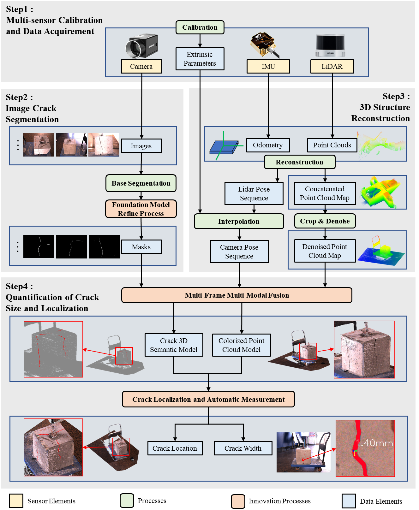
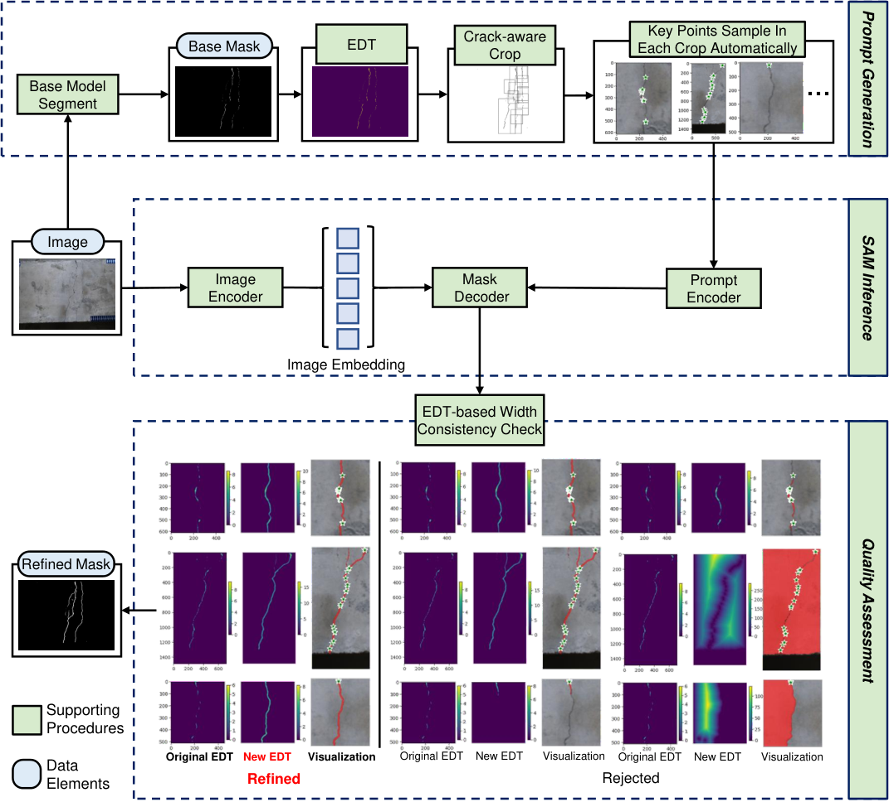
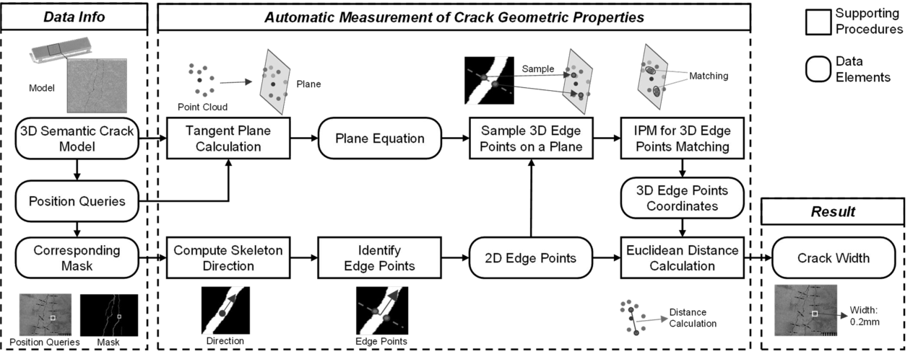
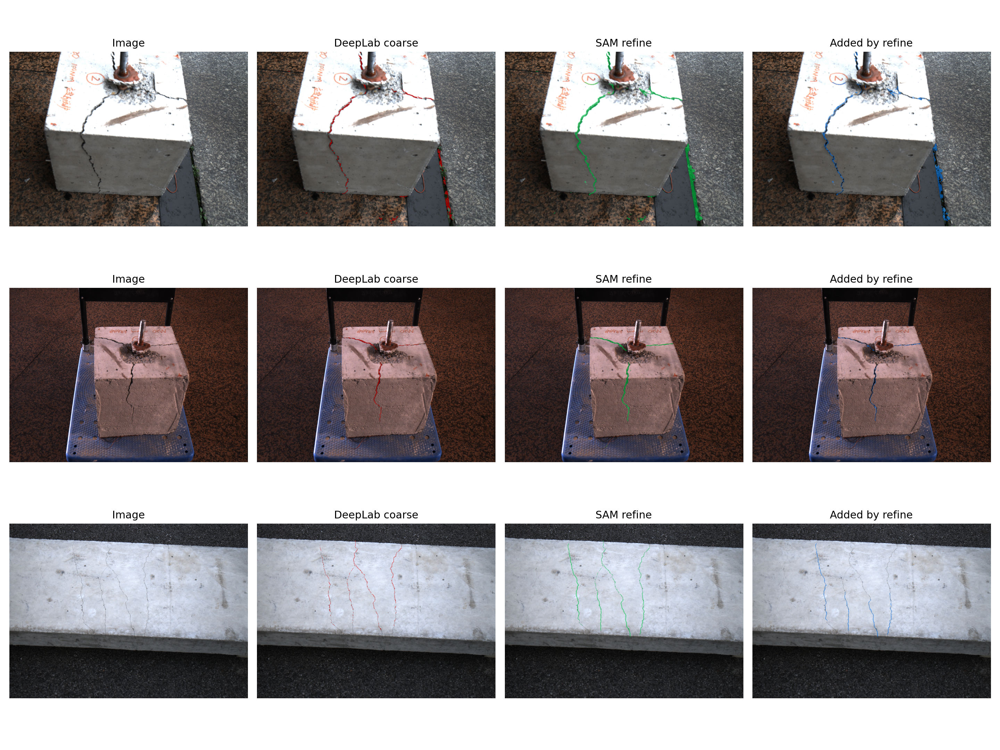
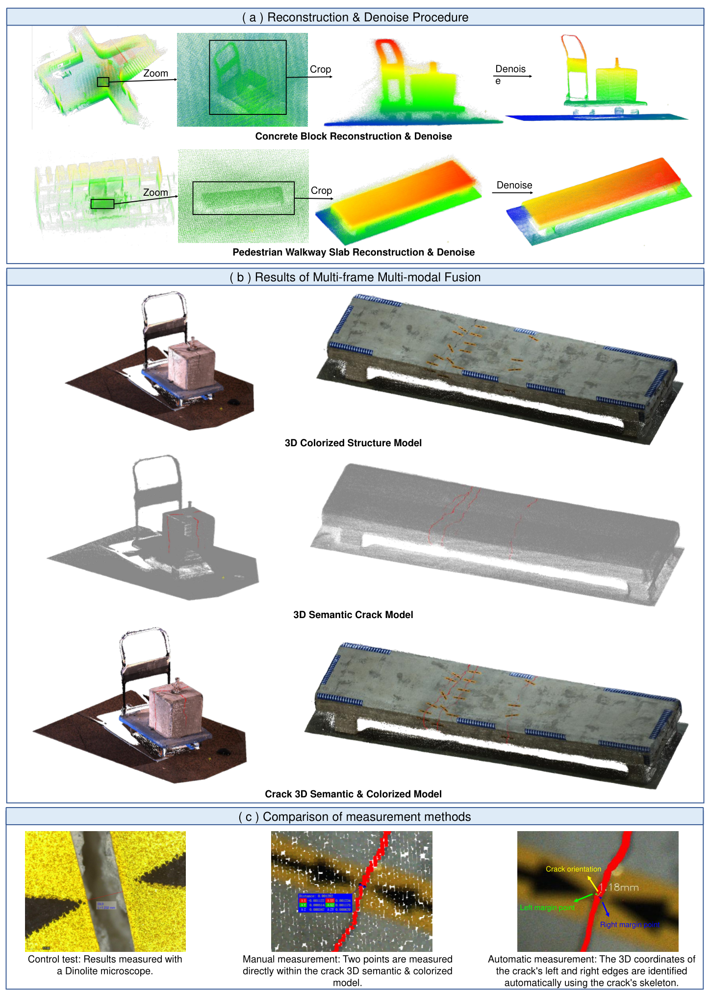
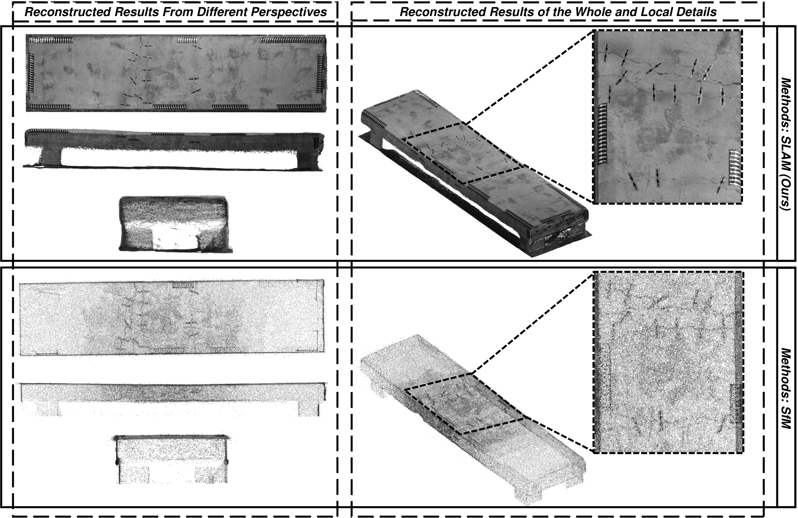

Crack-aware SAM refinement
A task-specific model provides coarse crack cues. Skeleton-derived point prompts guide SAM, and geometry-aware quality checks prevent over-wide or topologically implausible masks.
CRACKSEG / ARXIV:2501.09203
Segment Anything refinement and visual–inertial–LiDAR fusion for field-ready crack inspection at real-world scale.
*Corresponding authors · Computer-Aided Civil and Infrastructure Engineering, 2026
PAPER SUMMARY
AI-based crack inspection often loses accuracy in unfamiliar scenes and usually separates image-based crack detection from spatial measurement. CrackSeg addresses both limitations in one pipeline. A crack-aware prompt generator turns coarse DeepLabV3+ masks into reliable SAM prompts, while quality assessment rejects implausible refinements. Multi-frame RGB, LiDAR, and inertial data are then fused into a dense, real-scale semantic point cloud. Crack width and 3D location are extracted directly from this representation, enabling automated inspection on complex and non-planar concrete surfaces.
END-TO-END WORKFLOW
The complete system connects calibrated multi-sensor acquisition, image crack segmentation, metric 3D reconstruction, and automated crack localization and width measurement.

APPROACH
The method is organized as a reproducible five-stage implementation, summarized here as three scientific components.
A task-specific model provides coarse crack cues. Skeleton-derived point prompts guide SAM, and geometry-aware quality checks prevent over-wide or topologically implausible masks.
FastLIO2 reconstructs the structure at real-world scale. Calibrated camera poses project multi-frame RGB masks into the LiDAR geometry to build a colorized, crack-aware point cloud.
Local surface normals, crack skeletons, and paired edge points yield width and spatial coordinates directly in 3D—without assuming a planar inspected surface or requiring manual point-cloud measurement.
SEGMENTATION

MEASUREMENT

EXPERIMENTS
The paper evaluates unseen-scene segmentation and validates automatic 3D measurements against microscope references.
| Base model | Baseline IoU | SAM-refined IoU | Gain |
|---|---|---|---|
| Swin Transformer | 36.77 | 44.15 | +7.38 |
| TernausNet | 42.13 | 49.92 | +7.79 |
| TransUNet | 45.28 | 52.04 | +6.76 |
| DeepLabV3+ | 46.61 | 53.21 | +6.60 |
RUNNABLE DEMO

3D RESULTS
Multi-frame fusion places image-derived crack masks onto a dense, real-scale point cloud while retaining the geometry needed for measurement.

COMPARATIVE RECONSTRUCTION

REPRODUCIBILITY
The repository exposes five pipeline stages with explicit input/output contracts. Lightweight demos are separated from the full ROS and raw-data workflow.
CITATION
@article{deng2026crack3d,
title = {{3D} Modeling and Automated Measurement of Concrete Cracks via
Segment Anything Refinement and Visual Inertial {LiDAR} Fusion},
author = {Deng, Pengru and Yao, Jiapeng and Li, Chun and Wang, Su and
Li, Xinrun and Ojha, Varun and He, Xuhui},
journal = {Computer-Aided Civil and Infrastructure Engineering},
volume = {45},
pages = {100019},
year = {2026},
publisher = {Elsevier},
doi = {10.1016/j.cacaie.2026.100019}
}